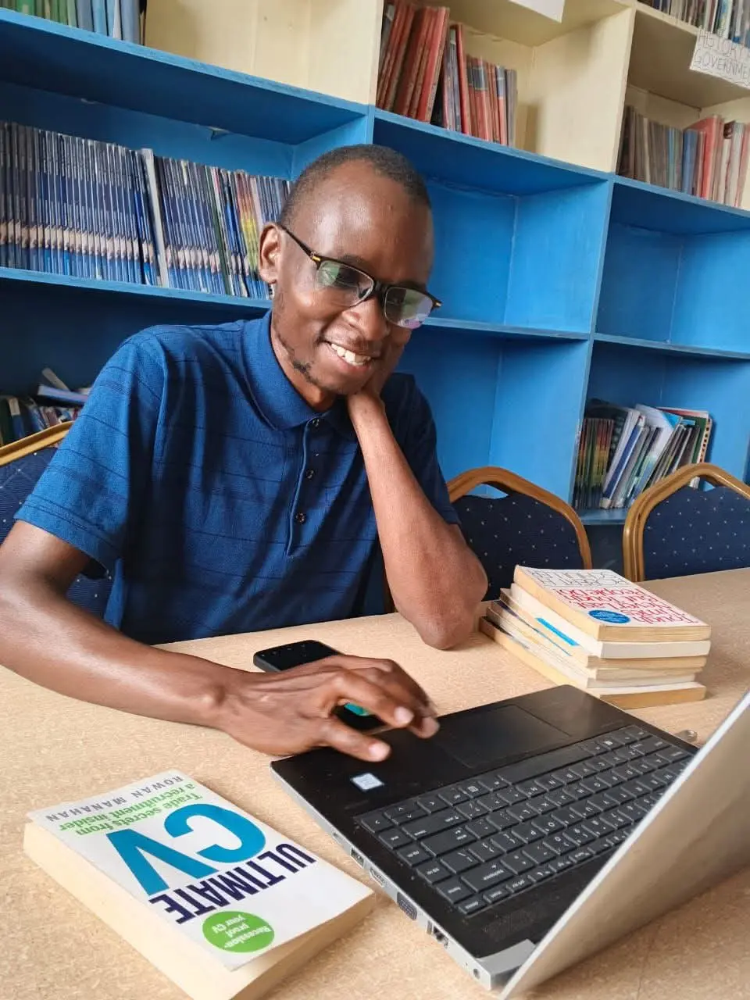

Coach, mentor, facilitator and consultant helping individuals and organizations close the gap between knowing and doing — through career coaching, entrepreneurship training, and leadership development across Kenya.

Isaiah Maresi is a Career & Leadership Coach, facilitator, and consultant based in Nairobi, Kenya, with a B.A. in Sociology from Moi University. For most people, there is a wide gap between what they know and what they actually do — and Isaiah has built his career closing that gap for young people, graduates, and emerging leaders.
Since 2020, Isaiah has worked with Shining Hope for Communities (SHOFCO), starting as a volunteer facilitator with the Shofco Urban Network (SUN) program and growing into his current role as Sustainable Livelihoods Officer. Along the way he has trained and equipped over 5,000 youth with employability and entrepreneurship skills, facilitated 90+ self-help groups, and mentored hundreds of small business owners in Nairobi's informal settlements.
Isaiah uses the ACTION Model — Awareness → Clarity → Translation → Implementation → Ownership → Navigation — across everything from CV writing and career readiness to business mentorship, leadership coaching, and financial literacy training. He also serves as a SHOFCO SACCO delegate, a Global Volunteer Mentor with the Global Mentorship Initiative, and a volunteer Senior Leadership Facilitator with Taifa Teule Network.
He works with NGOs and development partners seeking outcome-focused programs, organizations investing in people development, and youth, graduates, and entrepreneurs ready to take ownership of their growth.
Train and equip 5,000+ youth with employability and entrepreneurship skills through job-readiness and business management trainings, sourcing appropriate placements for participants. Facilitated business mentorship to 300+ young entrepreneurs and trained six refugee groups on USLA methodology and financial literacy under the Re-Build program.
Drove membership growth by 25%, recruiting 150+ new members. Facilitated quarterly financial education forums reaching 400+ members annually, provided loan advisory support to 120+ members, and resolved 95% of member complaints within agreed timelines.
Facilitated, coordinated, and supervised 90+ self-help groups across urban slum communities. Launched a Ksh.50 savings challenge campaign, increasing saving culture and group attendance by 80%, and helped recruit 500+ members into SHOFCO SACCO within two years.
Introduced new mobilization techniques that grew SHGs from 30 to 500+ within one year during the COVID-19 period. Provided ongoing training and mentorship to 150+ SHG leaders and 750+ group members, with 40+ SHGs transformed into sustainable business enterprises.
Mobilized, sensitized, and trained 86 SHGs and 7 CBOs on livelihood skills, financial literacy, and income-generating activities. Organized two mega community clean-ups in Mukuru slums by engaging groups and community members.
Provide career guidance and mentorship to college students and early-career professionals worldwide, focused on resume writing, interview preparation, and career planning, contributing to GMI's mission of empowering young professionals through structured virtual mentorship.
Leads weekly leadership coaching sessions for young leaders, building confident, proactive, and solutions-driven leadership. Trained 200+ leaders across community groups, youth programs, and organizations.
Dissertation: "The Impact of Parenting Styles on Academic Performance of Students in Secondary Schools in Suna East Division, Migori County, Kenya" (2018, unpublished). Co-founded the Moi University Social Agencies chapter and took part in community service initiatives including a blood donation drive and outreach at Sweet Angels Children's Home, Eldoret.
A look at how the ACTION Model is applied in real training sessions.
Inside a session on career readiness and leadership development.
Replace placeholder tiles with real photos — training sessions, leadership workshops, and community facilitation.